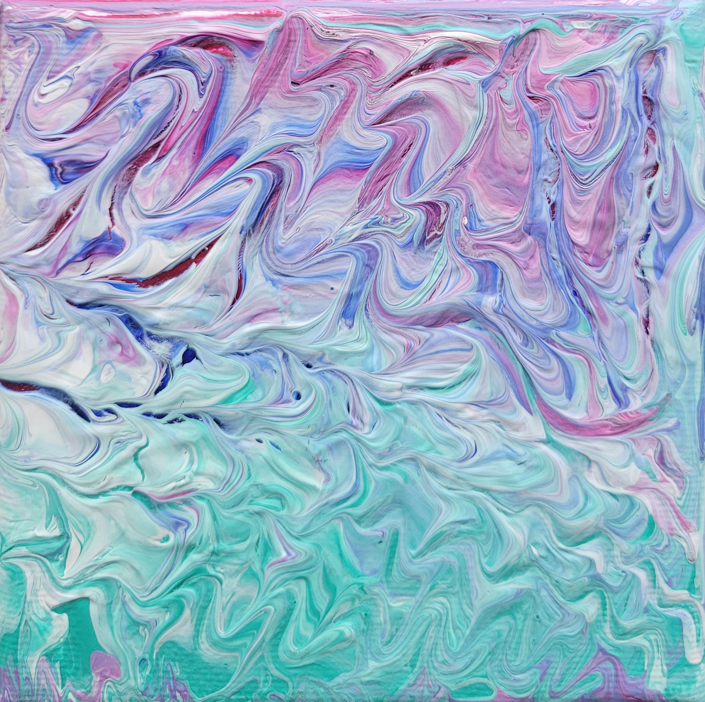
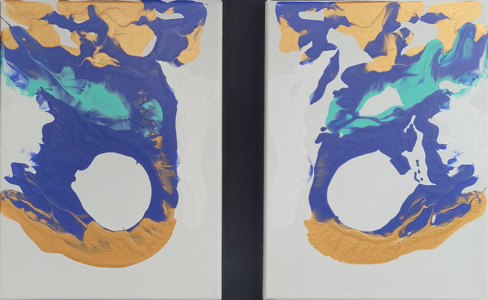
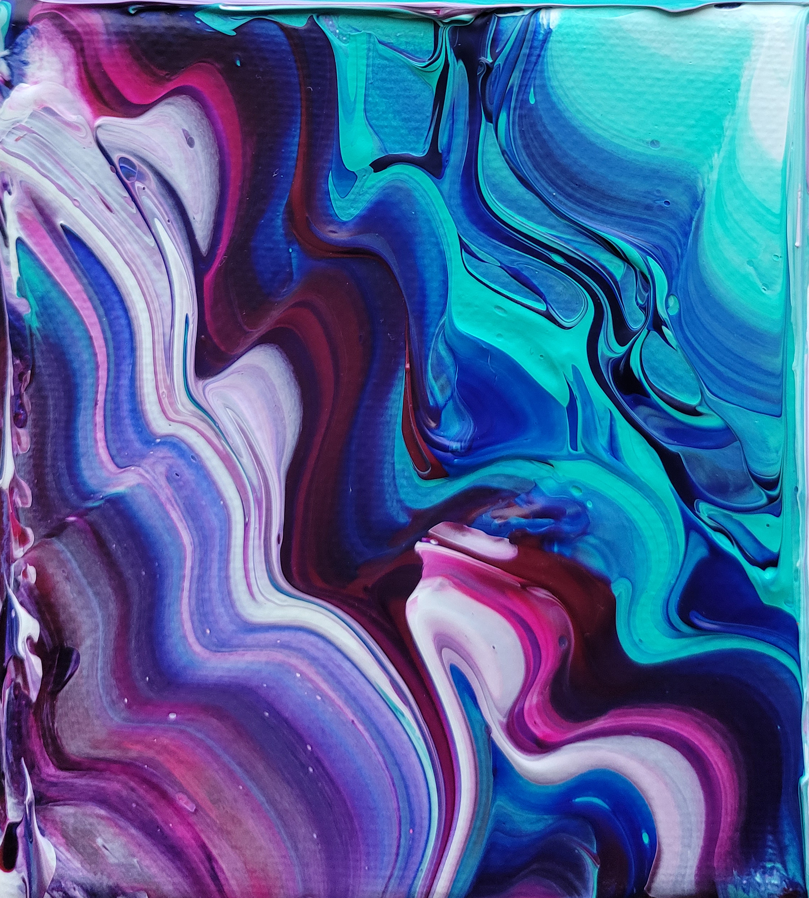

Mars' Art
menu
Home
About
Portfolio
Contact

Dreamstate
Joyful Resistance
Shapes Of The Night

An Imperfect Reflection
Space Ocean
Super Lemon Haze

The Flow Of Dreams
The Northern Lightning Dance